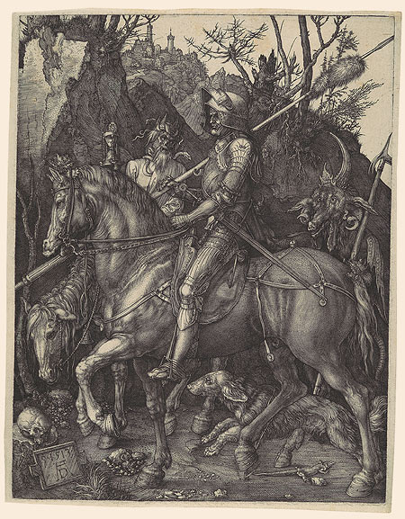

Drawings by Leonardo da Vinci
The Louvre holds over twenty sheets by Leonardo — studies of hands, horses, the tilt of a woman's head, the flow of water. A single silverpoint line, set down and never corrected.
The Cabinet des Dessins holds over 200,000 works on paper. They are too fragile for permanent display — rotated through small exhibitions — but the collection is one of the greatest in the world.
The Louvre holds over twenty sheets by Leonardo — studies of hands, horses, the tilt of a woman's head, the flow of water. A single silverpoint line, set down and never corrected.

One of Dürer's three "Master Engravings." A Christian knight rides impassively through a desolate gorge, unmoved by the hourglass-bearing Death beside him or the goat-headed Devil behind. The technical summit of Renaissance printmaking.

Rembrandt made over forty etched self-portraits across his lifetime. The Louvre holds a remarkable set. In ink on paper he is looser and more playful than in his painted selves — pulling faces, squinting, trying on hats.